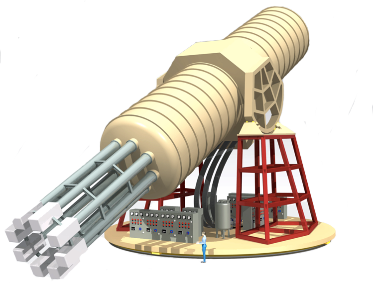
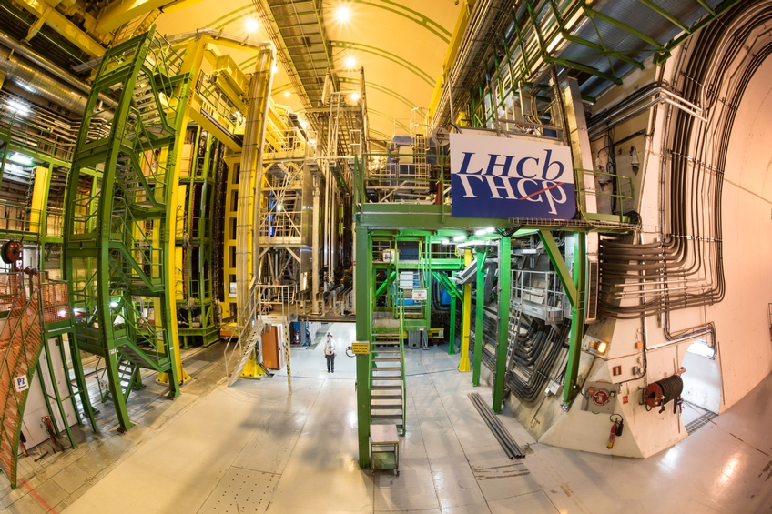
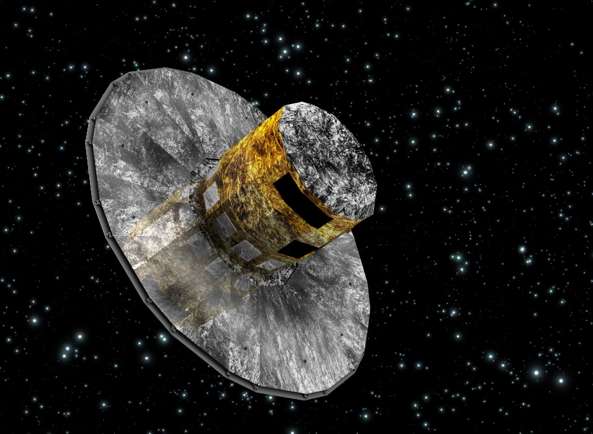
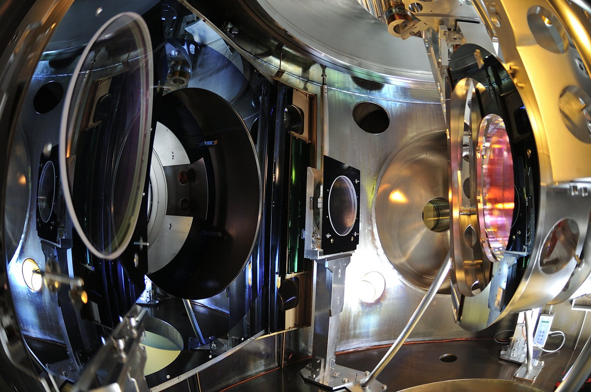

The ICCUB technology unit focuses on inventing and building the ambitious and innovative detection instruments of the future. This involves collaborating on large projects related to particle physics experiments, space missions, astronomical facilities and others. In this process some technologies like electronics and software engineering are transversal, thus constituting technological research lines by themselves. The technology unit of the ICCUB (or ICCUB-TECH) was created as a service unit to provide specialized understanding and experience in instrumentation, electronics, software engineering, and computer science.
The Technological Unit of the ICCUB is actually providing several groups of ICCUB with services, such as instrumentation and software development, in order to support their contributions to international collaborations. Some important developments which have already been carried out are the Preshower in the LHCb or the Data Compression in Gaia. Currently both divisions continue to participate in those experiments as well as other international collaborations: CTA, Virgo, IAXO.
ICCUB-TECH organization is divided into two divisions: Electronics and Instrumentation, and Software and Data Engineering.
Electronics and Instrumentation
A large part of the realization of a successful research project is due to the instrumentation that is used to bring it about. A careful design, specifically tailored to the needs of a project, and the construction of the different components that constitute telescopes, cameras and similar tools, are the aim of instrumentation science. ICCUB researchers and engineers have fifteen years of experience developing instrumentation for high energy physics, astrophysics, and space projects. They are involved in the following projects:
CTA
Development of Cherenkov Telescopes cameras, particularly for Large Sized and Medium Sized Telescopes for the CTA.

© Akihiro Ikeshita/Mero-TSK International
IAXO
Development of radiopure data acquisition electronics in order to improve the sensitivity of the experiment, reducing the background of the detector. Our work involves mainly the design of a radiopure acquisition board for low background experiments working with MicroMegas detectors.

© CERN
LHCb
ICCUB-TECH itself has been involved in the construction of this experiment and in its current upgrade. The tasks performed at the beginning included the design, production, commissioning and maintenance of the Scintillating Pad Detector (SPD), a subsystem belonged to the LHCb trigger, capable of distinguish between charged particles and photons at 40 MHz rate.

© Maximilien Brice/CERN
Solar Orbiter
The ICCUB is part of the Polarimetric and Helioseismic Imager instrument for the Solar Orbiter mission (SO/PHI). The ICCUB responsibility is the development and implementation of an Image Stabilization System (ISS) that includes a camera, a controller for a piezo-electric based Tip-Tilt mirror, and the control firmware for the FPGA that controls the whole system.

© ESA/C. Carreau
Software and data engineering
Software Engineering is an essential aspect of many of our science projects, from fundamental research, or experimental projects, to operational observatories. Additionally, the continuously increasing volume and complexity of the data involved requires efficient techniques for their manipulation and exploitation. The ICCUB-TECH engineers designed software to help produce high quality datasets, which give significance to the experiments and to the Physics behind those experiments because of their deep expertise on massive data handling from projects like Gaia and LHCb. They are involved in the following projects:
Gaia
The ICCUB has played a key role in the definition, implementation and operation of the data simulation, processing and exploitation of the Gaia space astrometry mission. Our experts have important responsibilities in the Data Processing and Analysis Consortium (DPAC) of Gaia.

© ESA
Virgo
ICCUB-TECH engineers have supported updates and improvements in the overall computing model of Virgo. We are implementing de-noising methods for data analysis pipelines, aiming to increase the sensitivity in the detection of gravitational waves.

© EGO-Virgo
SERVICES
- Analog and mixed mode microelectronics design
- Design and test of reconfigurable hardware (FPGA)
- Design and test of cards (PCB) and system
- Design low power, biomedical and low noise electronics
- Design of Power Management and Smart-Power units
- Design of fast photosensor (PMT, SiPM, MPPCs, APDs) readout electronics
- EMI / EMC characterization
- Radiation detectors design, simulation and test
- Semiconductor sensor and photosensor modeling and characterization
- Design and test of radiation tolerant systems for scientific and space applications
- Design and implementation of software systems for massive data handling and processing.
- Profiling and optimization of scientific software, archives and data transfer systems
- Tailoring, deployment and operation of Big Data platforms such as Hadoop-based systems.
CONTACT
Address
Institut de Ciències del Cosmos
Unitat Tecnològica
Parc Científic de Barcelona, Torre D
C. Baldiri i Reixac, 4-12
E-08028 Barcelona
Instrumentation: David Gascón
Data Processing: Jordi Portell